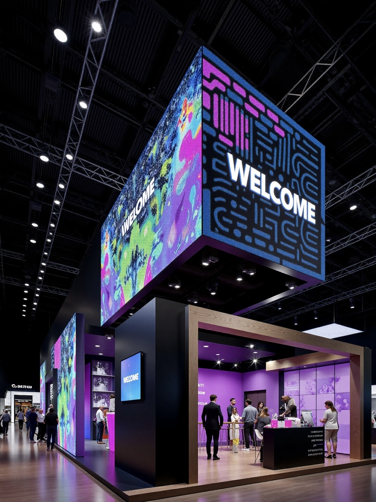
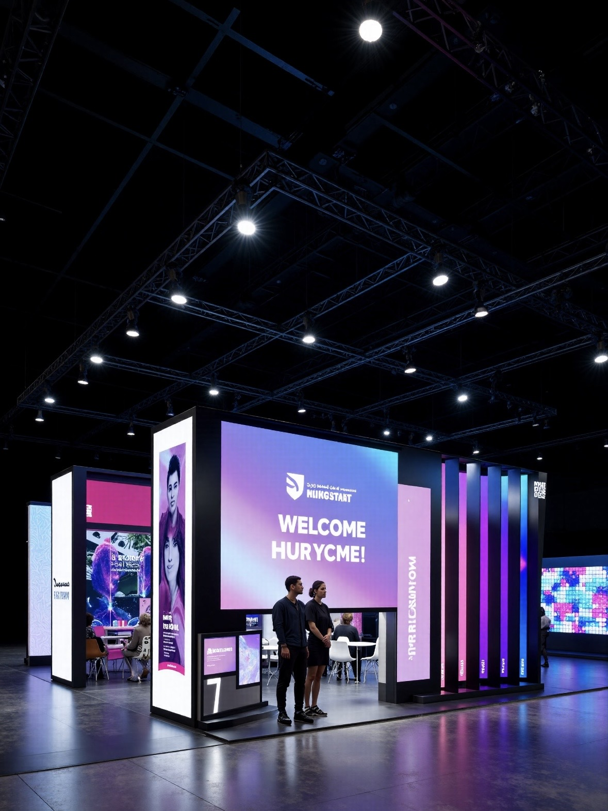

A hotel lobby is judged in the first ten seconds, and a large LED wall changes that judgment before a guest reaches the desk. The screen sets the tone of the property: calm and refined for a business hotel, vivid and playful for a resort.
Hospitality screens also earn revenue. Ballroom walls support weddings and conferences, lobby screens carry upsell offers and event listings, and poolside and terrace displays let the property sell to guests who are already on site and in a spending mood.
Unlike a retail screen, a hotel display is part of the interior design. It has to disappear into the architecture when it is off, match the palette of the lobby, and avoid the hard, obvious look of a generic panel bolted to a wall.
This guide covers where LED displays belong in a hotel or resort, how to choose pitch and brightness so the screen looks designed rather than installed, and how to keep it running in a property that never closes.
It also covers the operating model. A hotel rarely has a dedicated AV team, so the content system has to be simple enough for the marketing office and robust enough to run unattended for weeks.
Seasonality shapes the content calendar. A resort may run family imagery through the summer, conference branding in the shoulder months, and holiday graphics in December, so the platform should let staff queue a year of themes in advance rather than rebuilding artwork each season. Revenue and design are not separate conversations either: a screen that can be rescheduled per daypart lets the property promote a spa treatment in the morning and a restaurant in the evening from one surface.
The lobby feature wall is the signature application. It shows art, brand films, and seasonal graphics, and it is often a shaped or curved surface rather than a rectangle, so the screen can follow an architectural line.
Ballroom and conference screens support events. They show speaker content, live camera feeds, and event branding, and they usually need to be large, bright enough for a lit stage, and quick to change between sessions.
Poolside and terrace displays face sun, humidity, and weather. They use outdoor-rated cabinets with high brightness and are usually tuned to avoid glare for guests sitting nearby rather than to shout across a street.
Restaurant and bar areas inside the property use smaller screens for menus and atmosphere, following the same food-service logic of accurate color and controlled brightness that any dining venue needs.
Back-of-house and conference foyers use wayfinding and meeting-room signage, which is a quieter application where legibility and scheduling matter more than spectacle.
Wayfinding on a large property is often underrated. A resort with several restaurants, pools, and function rooms benefits from screens that show live information about what is open, what is fully booked, and where an event is being held, which reduces calls to the front desk. Guests read a screen far more readily than a printed directory. Retail and spa areas follow the same logic as any premium retail space, using a display to build a mood and sharing the lobby wall's visual language so the property feels like one continuous design.
| Hotel Area | Screen Type | Suggested Pitch | Brightness | Design Note |
|---|---|---|---|---|
| Lobby feature wall | Indoor fixed, curved | P1.2 - P1.9 | 800 - 1500 nits | Shaped to architecture, art content |
| Ballroom and conference | Indoor fixed or rental | P2.6 - P3.9 | 1500 - 2500 nits | Stage-lit, fast session changes |
| Poolside and terrace | Outdoor IP65 | P4 - P6 | 5000 - 8000 nits | Weatherproof, de-glare tuned |
| Restaurant and bar | Indoor fixed | P1.9 - P2.6 | 800 - 1500 nits | Appetizing color, daypart menu |
| Meeting foyer | Indoor fixed | P2.6 - P3.9 | 800 - 1200 nits | Wayfinding, room schedules |
Pitch is chosen for the closest guest, not the average one. In a lobby where people stand two meters away, P1.2 to P1.9 keeps images and text smooth, while a ballroom viewed from the back rows works at P2.6 to P3.9.
Curved and shaped screens are common in hospitality because straight rectangles rarely fit a designer's intent. Flexible modules let the display follow a column, a corner, or a wave, and a fine pitch keeps the curve looking smooth rather than faceted.
Brightness should be tuned to the room and the hour. A lobby wall at 800 to 1500 nits looks elegant in evening lighting, while a ballroom under stage lights needs 1500 to 2500 nits so content is not washed out. Automatic dimming that follows the property's lighting scenes keeps the screen comfortable around the clock.
Color calibration matters for brand consistency. A property with a defined palette needs the screen to reproduce that palette exactly, so panels are calibrated to a shared white point and a controlled color space.
Cabinet depth and finish affect the interior as much as the panel itself. Slim, front-serviceable cabinets sit close to the wall and avoid a heavy black box, and a matt finish reduces reflections in a bright lobby.
A curved wall needs more than flexible modules. The content must be authored for the curve, because artwork designed for a flat rectangle looks stretched when it is wrapped. Sending a curved geometry profile to the content team at the design stage avoids a re-render after the wall is installed. Cabinet weight also matters when a screen hangs above a marble floor or a glass balustrade, because a lighter cabinet reduces the structural work above the ceiling and simplifies the lifting plan.
| Closest Viewer | Suggested Pitch | Typical Hospitality Use |
|---|---|---|
| 1 - 2 m | P0.9 - P1.5 | Lobby art wall, reception backdrop, lift lobby |
| 2 - 4 m | P1.5 - P2.6 | Restaurant, bar, lounge feature wall |
| 4 - 8 m | P2.6 - P3.9 | Ballroom, conference room, meeting foyer |
| 8 - 15 m | P3.9 - P6 | Poolside, terrace, outdoor bar |
| 15 m and beyond | P6 - P10 | Facade signage, entrance monument |
A hotel never closes, so the display has to be serviceable without disturbing guests. Front-serviceable cabinets let a technician replace a module from the room side, which is the practical choice for a lobby wall that cannot be approached from behind.
Event use demands flexibility. A ballroom screen may run a wedding video in the afternoon and a conference presentation in the evening, so the system should store preset configurations and switch between them without re-cabling or a long setup window.
Rental panels extend the reach. A 500 by 500 cabinet set lets the events team build a large wall for a gala and take it down the next day without a permanent installation in every function room.
Content workflow should be simple. Marketing staff should be able to upload artwork, schedule it by property zone and time, and see what is playing, without calling an integrator for routine changes.
Spares and support complete the plan. Keeping spare modules and a power supply on site lets the engineering team fix a single dead panel before a guest notices it, which protects the property's reputation and avoids an expensive emergency call-out.
Contracts should be clear about response. A hotel cannot wait days for a service visit during peak season, so it helps to agree on a spare-parts level, a remote diagnosis process, and a response window before the order is placed. These are the terms that decide how a failure is experienced by a guest. A wall that is repaired before breakfast is a minor incident, not a review complaint.
Asia Vision Technology supplies indoor COB, flexible, and outdoor IP65 LED displays from P0.9 to P20, certified to CE, FCC, and RoHS, for lobbies, ballrooms, and outdoor hospitality spaces.
For hotels and resorts we support designers with cabinet drawings for curved and shaped walls, help calibrate color to the property's palette, and recommend service access that keeps maintenance invisible to guests. Orders ship in 15 to 20 working days with a 3-year warranty.

For this requirement our range covers it directly: the RH-PRO fine-pitch COB (flagship, full redundancy) and the COB CV-PRO series (Ultra-HD fine pitch).